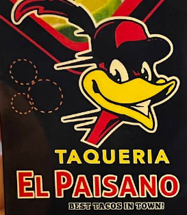

Paisano means neighbor.
That's how we cook.
Taqueria El Paisano opened with one simple idea: feed the Valley like family. Every plate that goes out the window is made the way we'd make it for our own table — fresh trompo, hand-cut everything, and salsa that actually has some kick.

From one trompo to a Valley favorite
A window, a trompo, and a recipe box
El Paisano started small — one grill, one trompo, and recipes passed down through the family. The goal never changed: real flavor, no shortcuts.
The menu grows with the neighborhood
Alitas, tortas, sincronizadas and hamburguesas joined the tacos as regulars kept asking for more. Every addition still gets made from scratch.
Still family-run, still fast
We're still the same drive-thru window, still cooking to order — just with a lot more regulars calling us their favorite taco stop in the RGV.
The El Paisano way
Made Fresh, Always
Nothing sits around. Tortillas, salsas, and meats are prepped for the day — not the week.
Family Recipes
Our recipes come from home kitchens, not a corporate menu. That's the whole difference.
Rooted in Faith
We keep a little scripture on the wall and in our hearts — you can read our verse of the day, too.